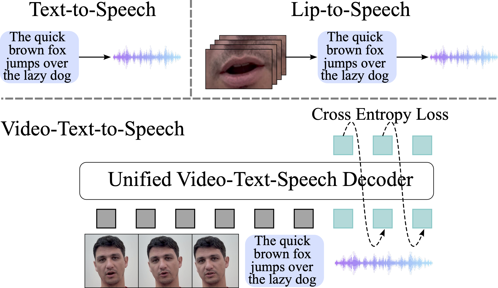

Abstract
The rapid progress of foundation models and large language models (LLMs) has fueled significantly improvement in the capabilities of machine learning systems that benefit from mutlimodal input data. However, existing multimodal models are predominantly built on top of pre-trained LLMs, which can limit accurate modeling of temporal dependencies across other modalities and thus limit the model’s ability to jointly process and leverage multimodal inputs. To specifically investigate the alignment of text, video, and speech modalities in LLM-style (decoder-only) models, we consider a simplified multimodal generation task, Video-Text to Speech (VTTS): speech generation conditioned on both its corresponding text and video of talking people. The ultimate goal is to generate speech that not only follows the text but also aligns temporally with the video and is consistent with the facial expressions. In this paper, we first introduce Visatronic, a unified multimodal decoder-only transformer model that adopts an LLM-style architecture to embed visual, textual, and speech inputs into a shared subspace, treating all modalities as temporally aligned token streams. Next, we carefully explore different token mixing strategies to understand the best way to propagate information from the steps where video and text conditioning is input to the steps where the audio is generated. We extensively evaluate Visatronic on the challenging VoxCeleb2 dataset and demonstrate zero-shot generalization to LRS3, where Visatronic, trained on VoxCeleb2, achieves a 4.5% WER, outperforming prior SOTA methods trained only on LRS3, which report a 21.4% WER. This highlights significant gains across objective metrics, such as word error rate and phoneme-level synchronization, and subjective assessments of naturalness and expressiveness. Additionally, we propose a new objective metric, TimeSync, specifically designed to measure phoneme-level temporal alignment between generated and reference speech, further ensuring synchronization quality.
Success Cases
| VTS | TTS | VTTS VT-ordered |
VTTS TV-ordered |
VTTS TV-streaming |
|
|---|---|---|---|---|---|
| id04232_Ky7pkJ4URUs_00164 | (0.67) | (0.26) | (0.28) | (0.61) | |
| id04276_yZOt_4-ckww_00480 | (0.26) | (0.24) | (0.16) | (0.15) | |
| id07354_w6xR5-Xue9o_00463 | (0.17) | (0.50) | (0.28) | (0.13) | |
| id04094_vJbJ_JD8dIg_00448 | (0.20) | (0.18) | (0.20) | (0.4) | |
| id05124_uPPqcWVd-dg_00455 | (0.18) | (0.36) | (0.12) | (0.12) | |
| id06692_wSyTmuuX5zk_00498 | (0.10) | (0.15) | (0.14) | (0.50) |
Table 1: The data is from the VoxCeleb2 dataset. Samples are generated by Visatronic with different conditioning. (TimeSync) is proveded for samples, measured in seconds: the lower the better synchronization between audio and video.
Failure Cases
| VTS | TTS | VTTS VT-ordered |
VTTS TV-ordered |
VTTS TV-streaming |
|
|---|---|---|---|---|---|
| id02086_zG7Qbte1KIg_00490 | (0.36) | (0.23) | (0.22) | (0.35) | |
| id05124_ksBpd5sIcA4_00380 | (0.71) | (0.33) | (0.29) | (0.33) | |
| id07620_ynUjo99Gzbk_00481 | (0.60) | (0.40) | (0.28) | (0.41) | |
| id02086_a4Y4afR7XWo_00349 | (2.11) | (0.43) | (2.11) | (1.45) | |
| id04094_rqaQ-0QVXnE_00416 | (0.28) | (0.39) | (0.24) | (0.34) | |
| id08374_zAQvDHZR--g_00476 | (0.18) | (0.40) | (0.30) | (0.60) |
Table 2: The data is from the VoxCeleb2 dataset. Samples are generated by Visatronic with different conditioning. (TimeSync) is proveded for samples, measured in seconds: the lower the better synchronization between audio and video.
BibTeX
@article{gupta2024visatronic,
title={Visatronic: A Multimodal Decoder-Only Model for Speech Synthesis},
author={Gupta, Akshita, and Likhomanenko, Tatiana and Yang, Karren, and Bai, He and Aldeneh, Zakaria and Jaitly, Navdeep},
journal={arXiv preprint arXiv:2411.17690},
year={2024}
}